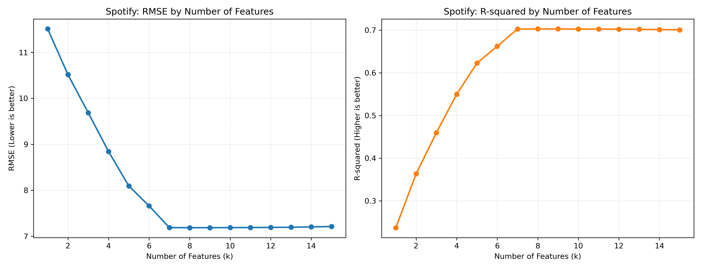
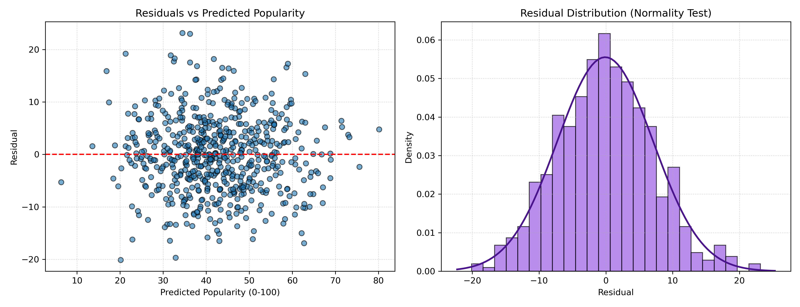
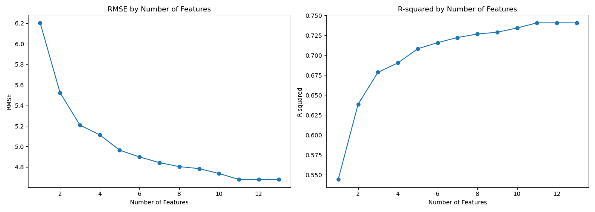

📊 多元線性回歸模型成果展 (Multiple Linear Regression)
🎵 HW2: Spotify Tracks 音樂流行度預測 符合作業規範：11 < 特徵數 < 30
資料集來源：Kaggle Spotify Tracks Dataset (選用 15 個關鍵聲學與曲風特徵，預測 0~100 流行度分數)
特徵數量評估折線圖 (RMSE vs R-squared)

模型殘差診斷圖 (Residual Diagnostics)
左圖殘差隨機散佈於 0 兩側；右圖長條圖呈現鐘形分佈，符合常態分佈假設（Normality of Errors）。

💼 50-Startups 公司利潤預測
分析研發支出、行銷費用與州別特徵，評估 1 到 5 個特徵之前向逐步挑選結果：
特徵數量評估折線圖 (RMSE vs R-squared)

| 特徵數 (k) | 加入特徵 | RMSE | R² | 說明 |
|---|---|---|---|---|
| 1 | R&D Spend | 8274.87 | 0.9465 | 研發支出為最具決定性變數 |
| 2 | + Marketing Spend | 8198.80 | 0.9474 | 🌟 全域最佳組合（最低 RMSE / 最高 R²） |
| 3 | + State_New York | 8309.06 | 0.9460 | 引入多餘特徵，開始輕度過擬合 |
| 4 | + State_Florida | 8409.92 | 0.9447 | 加入次要州別變數，預測誤差持續上升 |
| 5 | + Administration | 9137.99 | 0.9347 | 全特徵模型誤差顯著增加 (RMSE 突破 9100) |
模型殘差診斷圖 (Residual Diagnostics)

🏡 Boston Housing 波士頓房價預測
使用 13 個住宅與環境特徵進行逐步回歸評估：
特徵數量評估折線圖 (13 個特徵)
